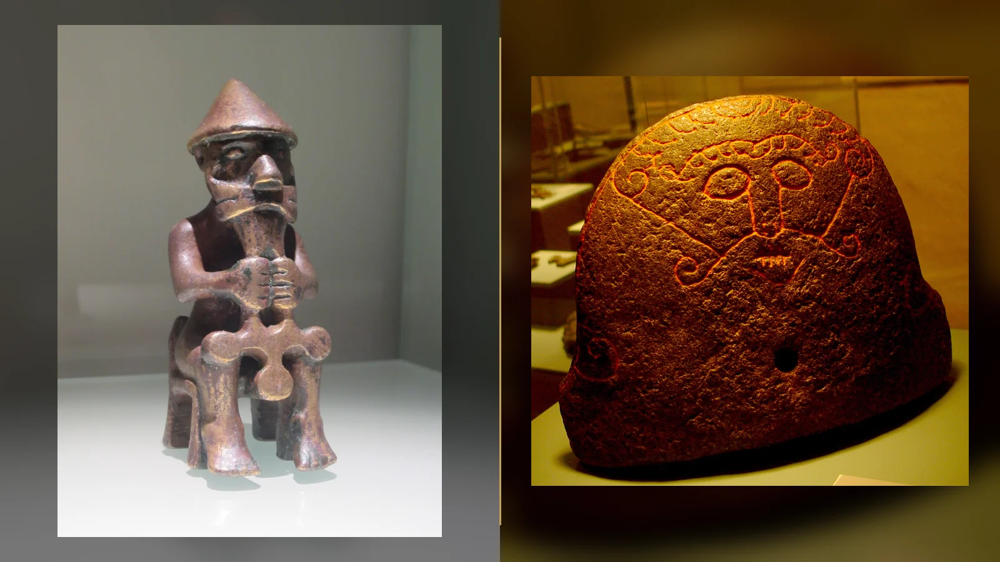
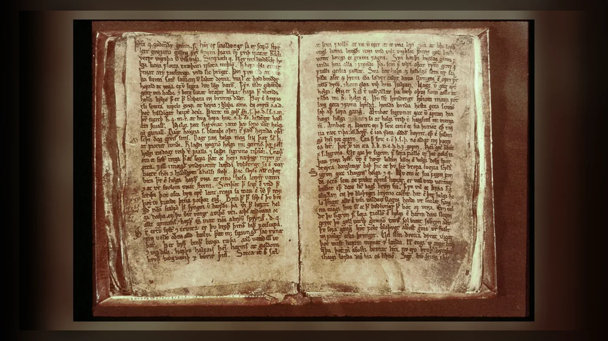
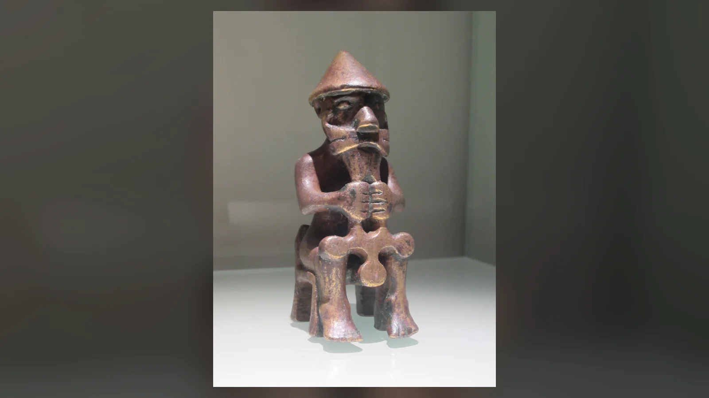
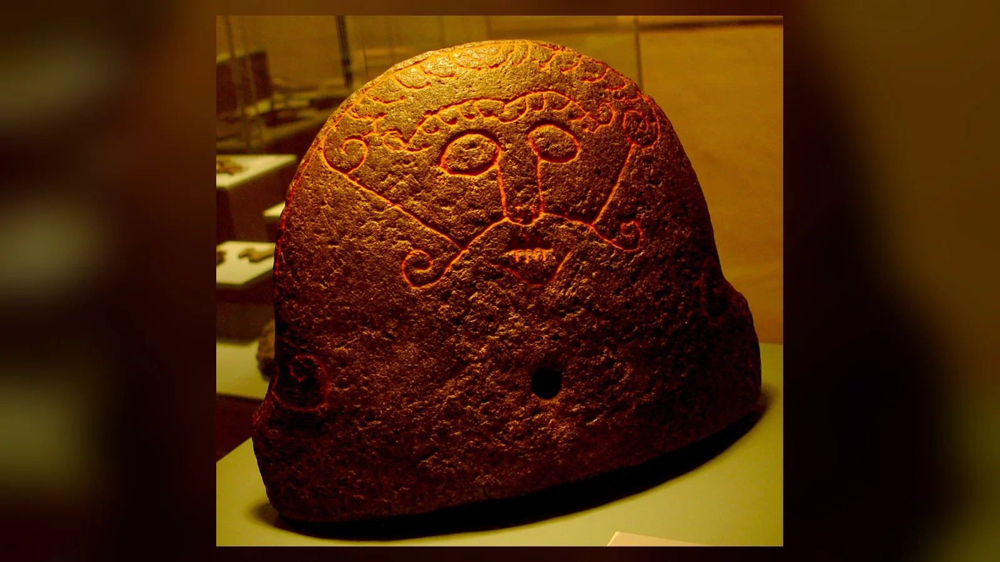
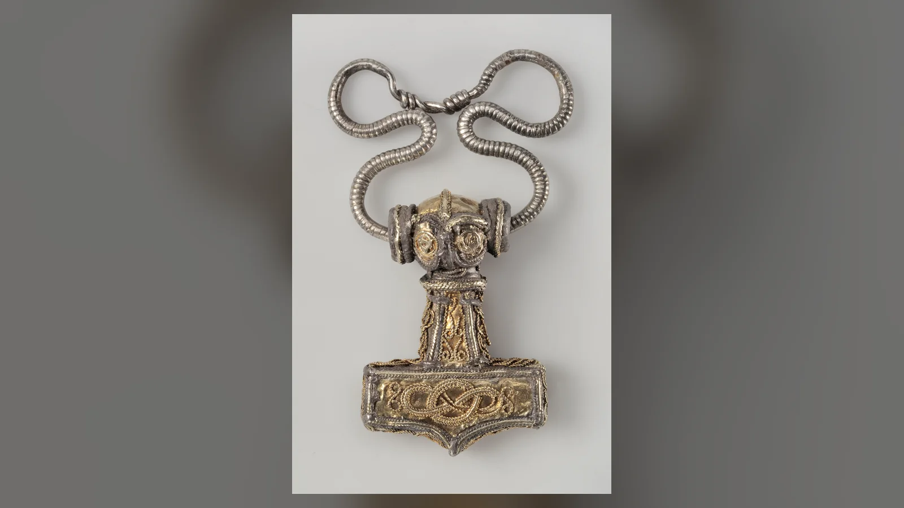
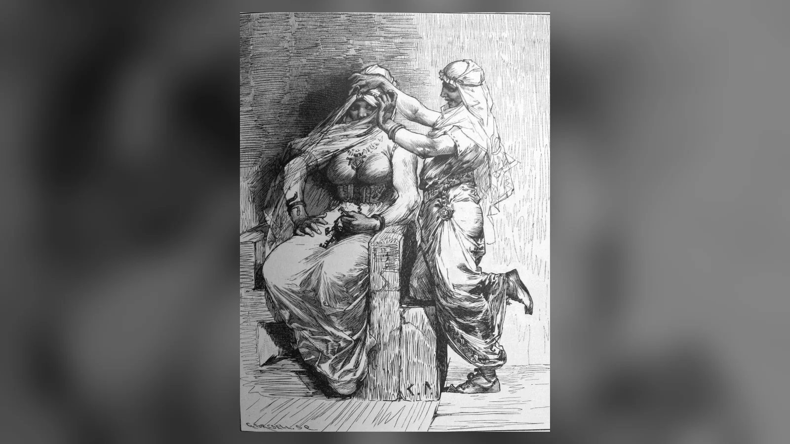
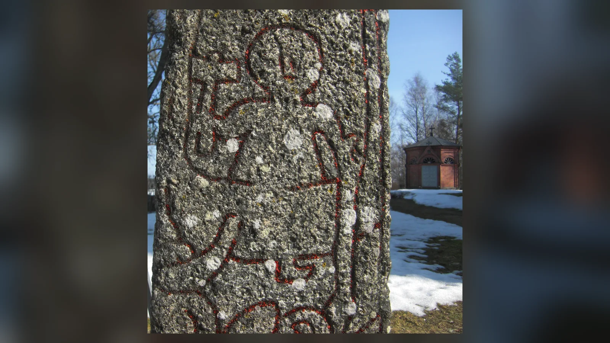
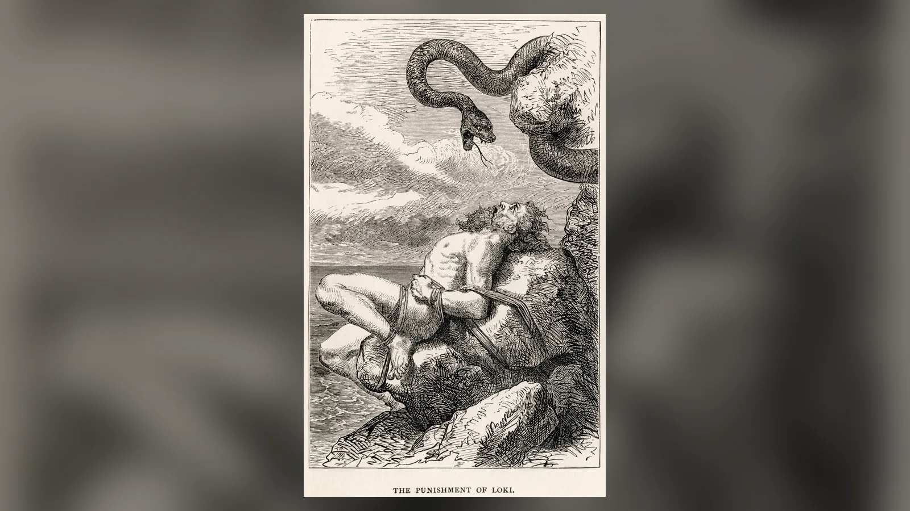

Thor ve Loki, Eski Nors mitolojisinde kardeş değildir. Loki, Odin’in evlatlık oğlu da değildir. Thor, Odin ile yeryüzünün kişileştirilmesi Jörð’ün oğludur; Loki’nin babası Fárbauti, annesi ise Laufey ya da Nál olarak verilir. Marvel’ın çizgi romanları ve bunlardan gelişen sinema evreni, eski kaynaklarda bulunmayan bir aile bağı kurarak iki karakteri Odin’in oğulları ve birbirinin kardeşi hâline getirdi. Thor ve Loki Marvel’dan farkları denildiğinde en çok bilinen değişiklik budur; fakat iki anlatı arasındaki asıl mesafe soy ağacından çok daha büyüktür.
Marvel, Thor’u gücünü nasıl kullanacağını öğrenen modern bir kahramana; Loki’yi ise aynı hanenin içinde büyümüş, kimliği ve tahtla ilişkisi üzerinden çatışan karizmatik bir rakibe dönüştürür. Eski Nors şiirlerinde Thor’un temel işlevi başka bir yerde durur: devlerle savaşır, tanrıların ve insanların dünyasını tehdit eden güçlere karşı sınırı korur, büyük iştahı ve öfkesi kadar güvenilir fiziksel kuvvetiyle de tanınır. Loki ise tek bir role sığmaz. Thor’la yolculuk eder, tanrıların kaybettiği nesneleri geri getirir, bazen kendi çıkardığı felaketi çözer; Baldr’ın ölümü ve Ragnarök çevresindeki gelenekte ise tanrıların karşısına geçen çok daha karanlık bir konuma ulaşır.
Marvel ile mitolojiyi karşılaştırırken “doğru–yanlış” cetveli çıkarmak pek anlamlı değildir. Marvel tarihsel mitoloji dersi vermeyi amaçlamayan modern bir kurgu evrenidir. Yaptığı değişiklikler, uzun süre boyunca farklı şiirlerde ve anlatılarda şekillenmiş figürleri devamlılığı olan aile dramına ve süper kahraman hikâyesine uyarlamıştır. Yine de modern karakterlerin nerede bittiğini, Şiirsel Edda ve Snorri Sturluson’un aktardığı Thor ile Loki’nin nerede başladığını ayırmadan eski mitleri anlamak mümkün değildir.
Thor ve Loki Gerçekten Kardeş mi?
Eski Nors kaynaklarında Thor ile Loki arasında kardeşlik bağı kurulmaz. Thor’un Odin’in oğlu olduğu şiirlerde ve Snorri’nin Edda’sında açıkça yer alırken Loki farklı bir soydan gelir. Gylfaginning Loki’yi dev Fárbauti’nin oğlu, Laufey ya da Nál’ın çocuğu olarak tanıtır. Skáldskaparmál da onu “Fárbauti ile Laufey’in oğlu” diye tarif eder. Loki’nin kaynaklarda sık sık annesinin adıyla, “Laufeyjar sonr”, yani “Laufey’in oğlu” olarak anılması dikkat çekicidir. Þrymskviða’da Thor’un yanında gelin kılığına girip devlerin ülkesine giderken de aynı adlandırma kullanılır.
Loki’nin Odin’le bağı Marvel’daki baba-oğul ilişkisine hiç benzemez. Lokasenna 9. kıtada Loki, Odin’e eski günlerde kanlarını birbirine karıştırdıklarını ve ikisine birden sunulmadıkça Odin’in içki içmeyeceğine dair söz verdiğini hatırlatır. Şiir bundan ayrıntılı bir tören veya aile hukuku çıkarabileceğimiz kadar bilgi vermez. “Kan kardeşi” ifadesi ilişkinin niteliğini açıklamak için kullanılabilir; fakat Loki’nin Odin tarafından evlat edinildiğini gösteren bir metin yoktur. Odin’in mitolojik konumu için Antik Bilge’deki Odin makalesi bu bağın arka planını ayrıca açıklar.
Marvel’ın yaptığı değişikliğin dramatik sonucu güçlüdür. Dışarıdan gelen, Æsir arasında dolaşan ve aidiyeti hiçbir zaman basit olmayan Loki, aynı evde büyümüş rakip oğula dönüşür. Böylece Thor’un çatışması kozmik düzen ile sınır aşan bir varlık arasındaki gerilim olmaktan çıkıp baba onayı, taht, kıskançlık, sevgi ve kardeşlik üzerinden sürekli işleyebilen aile dramına bağlanır. Bunun Marvel tarafından açıkça ilan edilmiş tek bir açıklama olduğunu varsaymak gereksizdir; anlatısal sonuç zaten ortadadır.
Marvel Comics ile Marvel Sinematik Evreni de tek süreklilik değildir. Çizgi romanlarda onlarca yıllık farklı dönem, yeniden yorum ve alternatif evren bulunur; MCU ise bunların bazı unsurlarını seçip kendi devamlılığını kurar. Bu nedenle çizgi roman ayrıntısıyla film ayrıntısını tek “Marvel mitolojisi” gibi birleştirmek de doğru değildir.
Edda Metinlerindeki Thor ve Loki’yi Nereden Tanıyoruz?
Thor ile Loki hakkında elimizde “Vikinglerin kutsal kitabı” sayılabilecek tek bir eser yoktur. Şiirsel Edda, farklı tarihlerde oluşmuş şiirlerin Orta Çağ’da bir araya gelmiş koleksiyonudur. Ana el yazması Codex Regius yaklaşık 1270’e tarihlenir. İçindeki şiirlerin önemli bölümü el yazmasından daha eski sözlü ve şiirsel malzemeyi korur; fakat her şiirin hangi tarihte son biçimini aldığını kesin olarak belirleyemeyiz.
Thor ve Loki için özellikle Þrymskviða, Hymiskviða, Hárbarðsljóð, Lokasenna ve Völuspá önemlidir. Þrymskviða, Mjölnir’in çalınması üzerine Thor ile Loki’nin birlikte devler ülkesine gidişini anlatır. Hymiskviða Thor’un dev Hymir’le yolculuğunu ve Jörmungandr’la karşılaşmasını işler. Lokasenna ise Loki’nin tanrıların şöleninde neredeyse herkesi aşağılayarak eski suçları ve utançları ortaya döktüğü sert bir şiirdir. Völuspá Ragnarök’ün şiirsel çerçevesini verir.

Snorri Sturluson’un 13. yüzyılın ilk yarısında yazdığı Nesir Edda başka tür kaynaktır. İzlanda’nın Hristiyanlaşmasından iki yüzyıldan fazla zaman sonra çalışan Snorri’nin amaçlarından biri eski skaldik şiirin karmaşık dilini açıklamaktı. Gylfaginning tanrılar ve kozmoloji için sistemli anlatı sunarken Skáldskaparmál şiirsel mecazları açıklamak amacıyla çok sayıda miti aktarır. Loki’nin çocukları, Baldr’ın ölümünün ayrıntıları, Mjölnir’in yapılışı ve Ragnarök’ün bazı sahneleri bugün en bütünlüklü biçimleriyle Snorri sayesinde bilinir.
Snorri geç tarihli diye değersiz değildir; onsuz bildiklerimizin büyük bölümü eksik kalırdı. Sorun onun anlatısını otomatik biçimde Viking Çağı’nın değişmez inanç sistemi saymaktır. Snorri kimi yerde daha eski şiirlerden alıntı yapar, kimi yerde dağınık malzemeyi tutarlı olay örgüsüne dönüştürür. Şiirsel kaynak ile Snorri uyuşmadığında iki geleneği de görünür tutmak gerekir.
Arkeoloji üçüncü kontrol alanını oluşturur. Viking Çağı’ndan Mjölnir biçimli kolyeler gerçekten bulunmuştur. Altuna gibi resim taşlarında Thor’un Jörmungandr’la karşılaşmasıyla ilişkilendirilen sahneler vardır. İzlanda’daki Eyrarland heykelciği yaygın biçimde Thor olarak yorumlanır. Snaptun’daki ocağa ait taş üzerindeki dikilmiş ağızlı yüz ise Skáldskaparmál’da Loki’nin ağzının dikilmesi anlatısıyla karşılaştırıldığı için Loki teşhisi almıştır. Arkeolojik bir yüzün altına “Loki” yazmadığı yerde teşhisin yorum olduğunu saklamamak gerekir.
Gök Gürültüsünün Koruyucusu: Mitolojik Thor
Thor, Eski Norsça Þórr, Germen dünyasının çok eski gök gürültüsü tanrısı geleneğinin İskandinav biçimidir. Adı Eski İngilizce Þunor ve Eski Yüksek Almanca Donar gibi akraba biçimlerle aynı köke uzanır. İngilizcedeki Thursday de “Thor’un günü” anlamına gelen Germen adlandırmanın izini taşır. İskandinav kaynaklarında Thor, Æsir’in en güçlülerinden biridir; devlere karşı savaşması onun en sürekli işlevlerinden biridir.
Thor’un gücü kaba kuvvetten ibaret görünse de bu kuvvetin mitolojik bağlamı vardır. Devler her anlatıda basit “kötü ırk” değildir; tanrılar onlarla evlenebilir, onlardan doğabilir ve bilgi alışverişinde bulunabilir. Buna rağmen Thor’un hikâyelerinde Jötunheimr sık sık düzenin sınırındaki tehlikeli alan olarak karşımıza çıkar. Thor çekiciyle bu sınırı koruyan figürdür. Hymiskviða’da dev Hymir’le denize açılıp dünya yılanını yakalamaya kalkması, Þrymskviða’da çalınan çekicini geri almak için dev Þrymr’ın salonuna gitmesi ve başka anlatılardaki dev öldürmeleri bu işlevi tekrarlar.
Thor’un arabasını Tanngnjóstr ve Tanngrisnir adlı iki keçi çeker. Snorri, Thor’un keçilerini kesip yiyebildiğini, derileri ve kemikleri üzerine Mjölnir’i koyarak onları yeniden canlandırdığını anlatır. Þjálfi’nin kemiklerden birini iliğine ulaşmak için kırması yüzünden keçilerden birinin topal kalması, Thor’un öfkesi ve sonunda Þjálfi ile Röskva’nın onun hizmetine girmesiyle sonuçlanır. Sahne Thor’un çekicinin öldürme kadar kutsama ve yeniden canlandırma bağlamına da girebildiğini gösterir.
Thor’un ailesi, Sif ve çocukları
Thor’un babası Odin, annesi Jörð’dür. Jörð sözcüğü “yer/toprak” anlamına gelir ve kaynaklarda kişileştirilmiş yeryüzüyle ilişkilidir. Thor’un eşi altın saçlarıyla tanınan Sif’tir. Jane Foster ise Marvel’ın modern karakteridir; Eski Nors kaynaklarında karşılığı yoktur ve herhangi bir eski tanrıçanın yeni adı değildir.
Thor’un oğulları Magni ve Móði’dir. Magni’nin annesi dev kadın Járnsaxa olarak verilir. Skáldskaparmál’daki Hrungnir hikâyesinde Thor dev Hrungnir’i öldürdükten sonra devin bacağı altında kalır; tanrılar onu kaldıramazken henüz çok genç olan Magni babasını kurtarır. Thor bunun üzerine Hrungnir’in atı Gullfaxi’yi oğluna verir. Móði hakkında daha az anlatı korunmuştur. Vafþrúðnismál, Ragnarök’ten sonra Magni ile Móði’nin Mjölnir’e sahip olacağını söyler.
Þrúðr adlı kız da Thor ve Sif’in ailesiyle ilişkilidir. Adı “güç” anlam alanındadır. Kaynaklarda onun hakkında oğullar kadar bütünlüklü hikâye yoktur. İnternette görülen kusursuz aile ağaçları, şiirsel ve nesir kaynakların farklı ayrıntılarını tek şemaya sıkıştırdığı için kimi zaman kanıtın belirsizliğini gizler.
Sif’in saçları Loki yüzünden mitolojik eşya tarihinin merkezine girer. Skáldskaparmál’da Loki Sif’in saçlarını keser. Thor onu yakalayıp kemiklerini kırmakla tehdit edince Loki cücelere altından, gerçek saç gibi büyüyecek yeni saç yaptıracağına söz verir. Bu kriz sonunda yalnız Sif’in altın saçları değil, Odin’in Gungnir’i, Freyr’in Skíðblaðnir’i, Draupnir, Gullinbursti ve Mjölnir gibi tanrıların en ünlü eşyalarının üretildiği yarışmaya dönüşür. Loki’nin düzen bozup ardından çözüm üretmesi için bundan daha iyi örnek bulmak zordur.
Kızıl sakal, büyük iştah ve devlerle mücadele
Marvel’ın sarışın Thor’u modern dünyadaki en güçlü görsel kalıptır. Eski kaynaklarda Thor’un kızıllığı özellikle sakalıyla ilişkilendirilir; İzlanda saga geleneğinde kızıl sakallı Thor tasviri vardır. Buna karşılık “bütün eski metinler Thor’un saçının kesinlikle kızıl olduğunu açıkça söyler” demek gereğinden fazla kesin olur. Þrymskviða Thor çekici kaybolduğunda sakalını salladığını söyler, fakat burada renk verilmez. Kızıl sakal geleneği ile modern sarışın görüntü arasındaki fark gerçek olsa da kanıtın sınırını korumak gerekir.
Thor’un iştahı şiirde komedi unsuruna dönüşecek kadar büyüktür. Þrymr’ın salonunda Freyja kılığına girdiğinde bir öküz, sekiz somon ve kadınlar için hazırlanmış yiyecekleri yer; ardından üç kap bal likörü içer. Þrymr “gelin”in iştahına şaşırınca Loki hemen açıklama uydurur: Freyja’nın devler ülkesine gelme heyecanından sekiz gecedir yemek yemediğini söyler. Loki’nin hızlı zekâsı ile Thor’un saklanması imkânsız fiziksel doğası aynı sahnede yan yana gelir.
Thor’un öfkesi de rastgele kişilik kusuru değildir. Çekici kaybolduğunda ilk tepkisi öfkedir; devlerle karşılaştığında çoğu kez doğrudan fiziksel çözüm arar. Yine de Thor’u “aptal kas gücü”ne indirmek kaynakları yoksullaştırır. Alvíssmál’da cüce Alvíss’i sorularla oyalayıp güneş doğana kadar tutması, Útgarða-Loki hikâyesinde ise kozmik ölçekteki sınamalara direnmesi daha geniş bir portre verir.

Mjölnir: Bir Süper Kahraman Silahından Daha Fazlası
Mjölnir, modern izleyici için Thor’un süper silahıdır; eski kaynaklarda ise öldürücü silah, kutsama nesnesi ve Thor’un koruyucu işlevinin işareti aynı çekicin çevresinde birleşir. Gylfaginning Thor’un üç önemli eşyasını sayar: Mjölnir, Megingjörð adlı güç kemeri ve Járngreipr adlı demir eldivenler. Kemeri taktığında gücünün arttığı, çekicin sapını kavramak için demir eldivenlerin gerekli olduğu anlatılır. Her Thor hikâyesi bu üç nesneyi birlikte sahneye çıkarmaz; onları değişmez “ekipman seti” gibi düşünmemek gerekir.
Çekicin kısa sapının hikâyesi
Mjölnir’in yapılışı Skáldskaparmál’daki Sif’in saçları hikâyesinin devamıdır. Loki, İvaldi’nin oğullarına Sif için altın saç, Freyr için Skíðblaðnir ve Odin için Gungnir yaptırdıktan sonra Brokkr’la bahse girer: Brokkr’ın kardeşi Sindri’nin bunlara denk üç hazine yapamayacağını söyler ve başını ortaya koyar. Sindri ocağa önce domuz derisi, sonra altın, en son demir koyar; Brokkr körüğü durmadan çalıştırmak zorundadır.
Loki bahsi kaybetmemek için sinek biçimine girerek Brokkr’ı sokar. İlk iki nesne hazırlanırken Brokkr dayanır; üçüncüde sinek göz kapağını öyle sert ısırır ki kan gözlerine akar ve bir anlığına körüğü bırakmak zorunda kalır. Ocaktan çıkan Mjölnir olağanüstüdür, fakat sapı planlanandan kısa kalmıştır. Tanrılar yine de çekici bütün hazinelerin en değerlilerinden sayar; devlere karşı savunmada vazgeçilmez olacaktır.
Loki bahsi kaybeder fakat başını vermemek için “başımı vaat ettim, boynumu değil” diye itiraz eder. Cüce başı boyundan ayırmadan alamayacağı için onu öldüremez; bunun üzerine Loki’nin dudaklarını diker. Snaptun Taşı’ndaki dikilmiş dudaklı yüzün Loki olarak yorumlanmasının temel dayanağı bu sahnedir.

“Layık olan kaldırabilir” kuralı mitolojide var mı?
Marvel’ın Thor mitosuna yaptığı en etkili eklemelerden biri Mjölnir’in “layıklık” şartıdır. Modern anlatıda çekici kaldırabilmek fiziksel kuvvetten çok ahlaki değerin sınavına dönüşür. Eski Nors kaynaklarında Odin’in çekice “yalnız layık olan taşısın” şeklinde büyü koyduğu bir sahne yoktur. Thor’un çekici onun silahıdır; kullanımı modern süper kahraman evrenindeki ahlaki parola sistemine bağlı değildir.
Ragnarök sonrasını anlatan Vafþrúðnismál, Thor’un oğulları Magni ile Móði’nin Mjölnir’e sahip olacağını bildirir. Burada da “layıklık sınavı” anlatılmaz. Þrymr çekici çalıp saklayabilir. Çekicin onun tarafından taşınabilmesi, Marvel’daki büyünün eski mitlerde bulunmadığını göstermeye yeter; bunun Þrymr’ın Thor gibi Mjölnir kullanabildiği anlamına gelmesi gerekmez.
Marvel açısından bu değişiklik çok işlevseldir. Mitolojik Thor’un gücü doğuştan gelen ve kozmik düzen içinde işlev gören güçken, modern kahramanın gücünü hak etmesi gerekir. Mjölnir karakter gelişimini ölçen nesneye dönüşür: kahraman yalnız güçlü olduğu için değil, gücü doğru biçimde kullanmayı öğrendiği için çekici geri kazanabilir. Bu, eski mitin “yanlış anlaşılması” değil, modern süper kahraman anlatısının farklı ahlak mekanizması kurmasıdır.
Thor’un çekici fırlatınca geri dönmesi meselesinde de kaynakları dikkatli okumak gerekir. Snorri Mjölnir’in hedefi ıskalamadığını ve fırlatıldığında Thor’un eline dönebildiğini anlatır. Dolayısıyla geri dönüş özelliği Marvel icadı değildir. Sinemadaki uçuş biçimi ise farklıdır: Thor çekici savurup onunla gökyüzünde yol alır. Eski Nors Thor’u düzenli ulaşım için keçilerin çektiği arabasıyla ilişkilidir; Marvel tarzı süper kahraman uçuşu kaynakların standart özelliği değildir.
Mjölnir kolyeleri ve tarihî buluntular
Viking Çağı ve Hristiyanlaşma dönemi İskandinavya’sında çok sayıda küçük çekiç biçimli kolye bulunmuştur. Bunların Thor’un çekiciyle ilişkilendirilmesi biçim, bağlam ve bazı yazıtlarla güçlü biçimde desteklenir. Danimarka’da bulunan Købelev amuleti özel önem taşır; runik yazısı nesneyi açıkça “hamar”, yani çekiç olarak tanımlar. Böyle örnekler, Mjölnir yorumunun yalnız ortaçağ edebiyatına dayanan modern varsayım olmadığını gösterir.

Çekicin kutsama işlevi şiirsel kaynakta görünür. Þrymskviða’da Þrymr, Freyja sandığı Thor’la evlenmeden önce Mjölnir’in “gelini kutsamak” için getirilmesini ister. Çekiç Thor’un dizine konulduğu anda kılık değiştirmiş tanrı silahına kavuşur ve düğün salonundaki devleri öldürür. Snorri’nin keçilerin diriltilmesi anlatısında da Mjölnir’in kemikler üzerine konması yeniden canlandırma sahnesinin parçasıdır.
Arkeolojik çekiç kolyelerinin her birinin tam olarak hangi ritüel anlamla taşındığını bilemeyiz. Hristiyan haçıyla kimlik rekabeti, koruma, Thor’a bağlılık ve kutsama gibi yorumlar bağlama göre tartışılır. Edebî metindeki kutsama ile maddi kültürdeki amuleti aynı şeymiş gibi birleştirmek yerine iki kanıt türünün birbirini desteklediği noktayı göstermek daha güvenlidir.
Loki Kimdir: Tanrı, Dev, Düzenbaz mı?
Loki için tek kelimelik tanım bulmak Thor’dan daha zordur. Snorri onu Æsir arasında sayar ama aynı anda tanrıların başına bela açan, hilede üstün varlık olarak tanıtır. Babası jötunn Fárbauti’dir; annesi Laufey ya da Nál’dır. Bu soy Loki’yi basitçe “buz devi” yapmaz. Eski Nors jötunn kavramı Marvel’daki Frost Giant/Jotun türüyle birebir örtüşmez; jötnar yalnız buzla ilişkili homojen biyolojik ırk değildir.
Loki’nin tanrısal statüsü de modern sınıflandırmalara dirençlidir. Şiirlerde Æsir’in yanında dolaşır, Odin’le özel bağı vardır, Thor’un yol arkadaşı olur ve tanrıların toplantılarına katılır. Buna rağmen Loki’ye yaygın, açık ve bağımsız bir kült bulunduğunu gösteren kanıt Thor veya Odin’deki kadar güçlü değildir. Bu yüzden “Loki kötülük tanrısıydı” ya da “Loki şu alanın tanrısıydı” gibi görev tanımları yanıltıcıdır.
Snorri’nin Loki portresi açıkça olumsuzlaşmıştır; onu hile ve kötülüğün kaynağı gibi sert ifadelerle anlatır. Fakat aynı bölüm Loki’nin tanrıları sık sık büyük sıkıntıya soktuğunu ve yine kendi kurnazlığıyla onları bu sıkıntılardan çıkardığını da söyler. Eski hikâyelerde Loki’nin temel özelliği sabit ahlaki kutuptan çok sınırların içinde ve dışında hareket edebilmesidir.
Fárbauti, Laufey ve Loki’nin gerçek ailesi
Marvel’ın en görünür değişikliklerinden biri Loki’nin ebeveynleridir. Mitolojik kaynaklarda babası Fárbauti, annesi Laufey/Nál’dır. Marvel sürekliliklerinde ise Laufey erkek, Loki’nin babası olarak yeniden kurulmuştur. Eski Nors metnindeki Laufey kadın ve annedir. Fárbauti’nin Marvel’daki aile düzeninde aynı merkezi rolü yoktur.
Loki’nin eşi Sigyn’dir. Snorri onların Nari ya da Narfi adlı oğlundan söz eder. Loki’nin cezalandırılması anlatısında oğulların adları karmaşıklaşır: Gylfaginning Narfi/Nari ile Váli’yi kullanırken Skáldskaparmál’daki akrabalık listeleri farklı adlandırmalar içerir. El yazması ve gelenek sorunları nedeniyle internette görülen kusursuz “Loki aile ağacı” kaynakların belirsizliğini gizleyebilir.
Angrboða ile Loki’nin üç çocuğu Fenrir, Jörmungandr ve Hel’dir. Snorri tanrıların bu çocuklardan büyük felaket geleceğini öğrenmesi üzerine Odin’in onları ayırdığını anlatır: Jörmungandr denize atılır ve dünyayı çevreleyecek kadar büyür; Hel ölüm alanına gönderilir; Fenrir ise tanrıların arasında tutulduktan sonra bağlanır. Ragnarök’te bu üçlü tanrıların sonuyla doğrudan bağlantılı olacaktır.
Loki neden “kötülük tanrısı” değildir?
Loki’nin Baldr’ın ölümündeki rolü ve Ragnarök’te tanrıların karşısına geçmesi onu modern gözle “kötü tanrı” olarak etiketlemeyi kolaylaştırır. Fakat eski kaynaklarda Hristiyanlıktaki Şeytan’a denk, kötülüğün metafizik hükümdarı olarak kurulmuş değildir. Üstelik Loki’nin erken ve komik mitlerdeki işlevi bu etikete sığmaz.
Þrymskviða’da Thor’un çekicini bulmak için Freyja’nın kuş giysisini kullanıp Jötunheimr’a giden Loki’dir. Thor’un gelin kılığı ortaya çıkmak üzereyken her defasında mazeret üreterek planı kurtaran yine odur. Sif’in saçlarını keserek krizi başlatır ama cücelerden tanrıların hazinelerini getiren de kendisidir. Iðunn’un kaçırılmasında suçun parçasıdır; sonra onu geri getirmeye zorlanır ve görevi başarır.
Bu davranışları tek psikolojik biyografiye dönüştürmek de risklidir. Elimizde Loki’nin çocukluğundan Ragnarök’e uzanan tek yazar tarafından kurulmuş roman yoktur. Farklı dönemlerdeki şiirler, skaldik göndermeler ve Snorri’nin sistemleştirmesi aynı isim çevresinde toplanmıştır. Loki’nin yardımcıdan düşmana dönüşümü metinlerde gerçektir; bunun arkasında tek bir “karakter gelişimi planı” bulunduğunu kanıtlayamayız.
Loki ateş tanrısı mı?
“Loki ateş tanrısıdır” internette çok yaygın bir cümledir, fakat tartışmasız kaynak bilgisi değildir. Loki adıyla Eski Norsça logi, “ateş/alev”, arasında ses benzerliği üzerinden eski etimolojiler kurulmuştur. Útgarða-Loki anlatısında Loki’nin yemek yarışına girdiği Logi ise ateşin kişileştirilmesidir; yarışın sonunda Logi’nin yalnız yiyeceği değil tekneyi de tüketmesinin nedeni budur. Loki ile Logi aynı karakter değildir.
Loki’yi ateşle ilişkilendiren karşılaştırmalı teoriler tamamen yok sayılacak şeyler değildir; folklor ve Hint-Avrupa karşılaştırmaları üzerinden savunulmuş görüşler vardır. Fakat bunlar “Edda Loki’yi ateş tanrısı olarak tanımlar” cümlesine dönüşemez. Şiirlerde Loki’nin sabit kült alanı olarak ateş verilmez.
Loki’nin Çocukları: Fenrir, Jörmungandr, Hel ve Sleipnir
Loki’nin çocukları onun sınır aşan doğasını en açık biçimde gösterir. Angrboða’dan Fenrir, Jörmungandr ve Hel doğar. Üçü de Ragnarök düzeninin merkezindedir: Fenrir Odin’i öldürür, Jörmungandr Thor’la karşılıklı ölüme giden mücadeleye girer, Hel’in alanındaki ölüler daha geniş kozmik çözülmenin parçası olur.
Marvel’daki Hela ile mitolojik Hel aynı aile düzenine sahip değildir. Eski Nors Hel’i Loki’nin kızıdır. Snorri bedeninin bir bölümünü koyu/ölümsü, diğer bölümünü normal ten görünümünde betimler ve ona hastalık ya da yaşlılık nedeniyle ölenlerle ilişkili alan verir. MCU’daki Hela ise Odin’in kızı ve Thor’un ablasıdır. İsim ve ölümle ilişki eski Hel’den esin taşırken karakterin soy ağacı ve Asgard tarihindeki rolü yeniden yazılmıştır.
Fenrir gerçekten Loki’nin oğludur. Jörmungandr da öyledir. Thor ile dünya yılanı arasındaki düşmanlık, Loki ile Thor’un modern “kardeş kavgasından” çok farklı akrabalık ağı yaratır: Thor’un Ragnarök’teki ölümcül rakibi, yol arkadaşı Loki’nin oğludur. Şiirlerde bunun aile melodramına dönüştürüldüğünü görmeyiz.
Sleipnir daha da sıra dışıdır. Asgard’ın surlarını yapan ustanın güçlü aygırı Svaðilfari işi olağanüstü hızlandırınca tanrılar, verdikleri ağır ücreti ödememek için Loki’yi çözüm bulmaya zorlar. Loki kısrak biçimine girer ve Svaðilfari’yi işten uzaklaştırır. Bu karşılaşmanın ardından Loki sekiz ayaklı Sleipnir’i doğurur; at daha sonra Odin’in bineği olur. Loki burada baba değil annedir.
Biçim değiştirme Loki’nin tekrar eden özelliğidir. Kısrak olur, kuş giysisiyle uçar; başka anlatılarda somon biçimine girer. Cinsiyet ve tür sınırlarını geçmesi, onun eski hikâyelerdeki en ayırt edici özelliklerinden biridir. Bunu modern kimlik kategorileriyle birebir açıklamak yerine metinlerin Loki’ye verdiği dönüşüm kapasitesi olarak görmek daha güvenlidir.
Thor ile Loki’nin Birlikte Yaşadığı Mitolojik Maceralar
Marvel’ın kardeşliği eski kaynaklarda yoktur; buna rağmen Thor ile Loki gerçekten sık sık aynı hikâyede yer alır. İlişkileri modern anlamda “daima düşman” değildir. Bazı anlatılarda yol arkadaşıdırlar ve özellikle Thor’un doğrudan gücü ile Loki’nin hızlı zekâsı birbirini tamamlar.
Þrymskviða: Thor’un gelin olduğu gün
Þrymskviða Thor’un uyanıp Mjölnir’i bulamamasıyla başlar. Öfkeyle sakalını sallar ve ilk haber verdiği kişi Loki’dir. İkili Freyja’ya gider; Loki onun kuş giysisini ödünç alıp devlerin ülkesine uçar. Þrymr çekici kendisinin çaldığını ve yerin sekiz fersah altında sakladığını söyler. Tek şartı Freyja’nın kendisine gelin olarak getirilmesidir.
Freyja bu teklifi öfkeyle reddeder. Tanrılar meclisinde Heimdall başka plan önerir: Thor gelin kılığına girecek, Brísingamen’i takacak ve Freyja gibi Þrymr’ın salonuna gidecektir. Thor önce bunun erkeklik itibarını zedeleyeceğini düşünerek itiraz eder. Loki tehdidin büyüklüğünü hatırlatır ve kendisi de hizmetçi kadın kılığına girerek onunla gitmeyi kabul eder.
Þrymr’ın salonundaki komedi Thor’un kişiliğinden doğar. “Gelin” bir öküz, sekiz somon ve büyük miktarda içki tüketir. Þrymr şaşırınca Loki, Freyja’nın devler ülkesine duyduğu özlemden sekiz gecedir yemediğini söyler. Þrymr gelini öpmek için peçeyi kaldırdığında Thor’un öfkeli gözlerinden ürker; Loki bu kez Freyja’nın sekiz gecedir uyumadığını söyleyerek durumu kurtarır.
Sonunda Þrymr evliliği kutsamak için Mjölnir’i getirip gelinin dizine koydurur. Thor çekicine kavuşur kavuşmaz kılık değiştirme biter ve devleri öldürür. Hikâye, Marvel’dan çok önce Thor ile Loki’nin neden iyi anlatı ikilisi olduğunu gösterir: biri saklanamayacak kadar fiziksel, diğeri her krizi sözle çevirecek kadar esnektir.

Útgarða-Loki’nin sınamaları
Snorri’nin Gylfaginning’inde Thor, Loki, Þjálfi ve Röskva dev Útgarða-Loki’nin salonuna ulaşır. Burada herkes yetenek sınavına sokulur. Loki herkesten hızlı yiyebileceğini söyler ve Logi ile yarışır. Loki eti kemiklerine kadar tüketirken Logi eti, kemikleri ve tekneyi bile yok eder. Sonradan Logi’nin “ateş” olduğu açıklanır; hiçbir canlı ateş kadar tüketici olamaz.
Thor içki boynuzunu bitiremez, bir kediyi yerden kaldıramaz ve yaşlı Elli’yi güreşte yenemez. Bunlar görünüşte küçük düşürücü başarısızlıklardır. Salonun dışında Útgarða-Loki büyünün sırrını açıklar: boynuz denize bağlıdır ve Thor o kadar çok içmiştir ki denizin seviyesini etkilemiştir; kedi aslında dünyayı çevreleyen Jörmungandr’dır ve Thor onu neredeyse göğe kaldırmıştır; Elli ise yaşlılığın kendisidir ve hiç kimse onu yenemez.
Sahne Thor’un gücünü küçültmek yerine kozmik ölçeğe çıkarır. Loki’nin yenilgisi de normal rakibe karşı değildir; ateşin tüketiciliğiyle yarışmıştır. Snorri’nin anlatısı Thor ve Loki’yi aynı yolculukta farklı sınırlarla karşılaştırır.
Geirröðr anlatısı
Skáldskaparmál’da Loki, şahin giysisiyle uçarken dev Geirröðr tarafından yakalanır. Serbest kalmak için Thor’u çekici ve güç eşyaları olmadan Geirröðr’ın evine getirmeye söz verir. Loki’nin kendi sıkıntısından kurtulmak için Thor’u tehlikeye sokması, ikili arasındaki daha karanlık örneklerden biridir.
Thor yol üzerinde dev kadın Gríðr’dan güç kemeri, demir eldivenler ve Gríðarvölr adlı asa alır. Geirröðr’ın kızlarının saldırısından kurtulur ve devin fırlattığı kızgın demir parçasını demir eldivenle yakalayıp ona geri atarak öldürür. Hikâye Thor’un Mjölnir olmadan da ölümcül güç olduğunu gösterir; aynı zamanda Loki’nin her zaman sadık yardımcı olmadığını hatırlatır.
Sif’in saçları ve Mjölnir’e uzanan kriz
Loki’nin Sif’in saçlarını kesmesi Thor’la doğrudan çatışma yaratır. Thor’un tehdidi Loki’yi cücelere gitmeye zorlar; Loki çözüm üretirken yeni bahis açar ve tanrıların en değerli eşyalarının doğmasına yol açar. Burada Loki’nin “sorun çıkaran ve sonra çözmek zorunda kalan” işlevi neredeyse saf hâliyle görülür.
Metin Loki’nin Sif’in saçını neden kestiğine uzun psikolojik gerekçe vermez. Bu boşluğu kıskançlık, aşk veya intikam hikâyesiyle doldurmak modern kurgu olur. Olay örgüsünün asıl ilgisi, bir yaramazlığın tanrıların güç nesnelerinin yaratılmasına dönüşmesidir.
Thor’un Jörmungandr’ı avlama girişimi
Hymiskviða ve Snorri’nin anlatısı Thor’un dünya yılanıyla Ragnarök’ten önceki büyük karşılaşmasını aktarır. Thor dev Hymir’le balığa çıkar. Yem olarak Hymir’in öküzlerinden birinin başını kullanır ve denize açılır. Jörmungandr oltaya geldiğinde Thor yılanı yukarı çekmeye çalışır; ayaklarının teknenin tabanını deldiği anlatılır.
Şiirsel ve nesir versiyonları ayrıntılarda tam olarak aynı değildir. Snorri’de Hymir korkuya kapılıp oltayı keser ve yılan kaçar; Thor öfkeyle Hymir’i denize atar. Hymiskviða’nın aktarımı farklı yorumlara açıktır. Bu karşılaşmanın sonu Ragnarök’te gelecektir: Thor Jörmungandr’ı öldürecek, fakat onun zehrinden kendisi de ölecektir.

- yüzyıl Altuna Taşı’nın ayrıntısında Thor, teknenin tabanına basarak Jörmungandr’ı oltaya çeker ve Mjölnir’i kaldırır. Fotoğraf: Gunnar Creutz. Kaynak; CC BY-SA 3.0.
Loki’nin Değişen Yüzü: Yardımcıdan Felaketin Habercisine
Loki’nin eski anlatılardaki en rahatsız edici tarafı, tek ahlaki çizgide ilerlememesidir. Þrymskviða’da Thor’un görevinin başarısı Loki’nin zekâsına bağlıdır. Sif’in saçlarında suçludur ama çözüm üretir. Iðunn anlatısında tanrıçanın kaçırılmasına yol açar, sonra onu geri getirir. Geirröðr hikâyesinde kendi kurtuluşu için Thor’u tuzağa sürükler.
Lokasenna bu ilişkinin başka yüzünü açar. Ægir’in şölenine gelen Loki, tanrıları ve tanrıçaları cinsel davranışları, korkaklıkları ve geçmişteki utançları üzerinden tek tek aşağılar. Thor sonlara doğru gelir ve Loki’yi Mjölnir’le tehdit eder. Burada ikili macera ortağı değildir. Loki sözle sınırları yıkar, Thor fiziksel tehditle onu susturmaya çalışır.
Şiirin hakaretlerini düz biyografik belge saymak da doğru değildir. Lokasenna bir senna, yani karşılıklı hakaret ve söz düellosu geleneği içinde işler. Bir karakterin diğerine yönelttiği suçlama otomatik olarak tarihsel “mitolojik gerçek” değildir. Yine de şiir, Loki’nin tanrılar topluluğuna içeriden saldırabilen konumunu çok güçlü biçimde gösterir.
Baldr’ın ölümü çevresinde çizgi daha karanlıklaşır. Snorri Loki’yi ölümün doğrudan düzenleyicisi yapar. Ragnarök’te ise artık Æsir’in yanında değildir. Bu dönüşüm modern romandaki tek karakter arkı gibi görünse de kaynakların farklı tarihlerdeki katmanlarını hesaba katmak gerekir. Loki’nin çok yönlülüğü farklı yerel ve şiirsel geleneklerin tek figürde birleşmesinin sonucu da olabilir.
Thor ile Loki’nin karşıtlığı edebî açıdan verimlidir. Thor sınırı bedeniyle korur; Loki sınırın kendisini geçirgen hâle getirir. Thor’un kimliği büyük ölçüde sabittir: güçlü erkek savaşçı, Mjölnir’in sahibi, devlerin düşmanı. Loki tür, cinsiyet, görünüş ve taraf değiştirebilir. Bunu eski İskandinavların açıkça formüle ettiği din öğretisi gibi sunamayız; anlatılar birlikte okunduğunda ortaya çıkan kültürel ve edebî okumadır.
Baldr’ın Ölümü ve Loki’nin Cezalandırılması
Baldr’ın ölümü Loki’nin mitolojik portresindeki dönüm noktasıdır. Snorri’nin Gylfaginning’inde Baldr kötü rüyalar görür. Annesi Frigg, ateşten sudan metallere, taşlara, hastalıklara ve hayvanlara kadar varlıklardan Baldr’a zarar vermeyeceklerine dair söz alır. Tanrılar bunun üzerine Baldr’a nesneler fırlatmayı eğlence hâline getirir; hiçbir şey ona zarar vermez.
Loki kadın kılığına girerek Frigg’den bir istisna bulunduğunu öğrenir: Valhalla’nın batısında büyüyen ökseotu çok genç görüldüğü için ondan yemin alınmamıştır. Loki ökseotundan silah hazırlar ve kör tanrı Höðr’a yaklaşır. Höðr eğlenceye katılmadığını, çünkü göremediğini söyler. Loki ona yön gösterir; Höðr ökseotunu Baldr’a fırlatır ve Baldr ölür.
Snorri’nin ayrıntılı anlatısı Loki’yi cinayetin planlayıcısı yapar. Şiirsel kaynaklar aynı ayrıntıların tamamını aynı biçimde vermez. Völuspá Höðr’ın Baldr’ı öldürmesini ve ökseotu motifini bilir; Loki’nin eylemi yönlendirdiği ayrıntılı sahne Snorri’de çok daha açıktır. “Bütün eski kaynaklar Loki’nin planını aynı biçimde anlatır” demek doğru olmaz.
Baldr’ın Hel’den geri dönmesi için bütün varlıkların onun için ağlaması şart koşulduğunda Þökk adlı dev kadın ağlamayı reddeder. Snorri bunun Loki olduğunun düşünüldüğünü söyler. Böylece Baldr ölüm dünyasında kalır. Loki artık tanrıların kriz çözücüsü değil, geri dönüş ihtimalini de bozan kişidir.
Cezası ağırdır. Loki yakalanır; Snorri’nin anlatısında oğullarından biri kurda dönüştürülür ve diğerini parçalar. Oğlunun bağırsakları Loki’yi kayalara bağlamak için kullanılır ve bağlar sertleşir. Skaði başının üzerine zehir damlatan yılan yerleştirir. Sigyn kapla zehri toplar; kabı boşaltmak için çekildiğinde damlalar Loki’nin yüzüne düşer, Loki acıyla kıvranır ve bu hareket depremlerle açıklanır. Ragnarök geldiğinde bağları çözülecektir.

Ragnarök’te Thor ve Loki’nin Sonu
Ragnarök Marvel’ın icat ettiği kavram değildir; fakat MCU’daki Thor: Ragnarok ile Edda metinlerindeki dünyanın sonu aynı olay örgüsü değildir. Völuspá ve Snorri’nin Gylfaginning’i kozmik düzenin çözülmesini, Fenrir ve Jörmungandr’ın serbest kalmasını, Surtr’un gelişini ve tanrıların son savaşını anlatır. Ayrıntılar kaynaklar arasında birebir aynı değildir.
Thor’un rakibi Jörmungandr’dır. Snorri’ye göre Thor dünya yılanını öldürür, sonra dokuz adım atar ve yılanın püskürttüğü zehir yüzünden yere düşerek ölür. Völuspá da Thor ile yılanın son karşılaşmasını şiirsel biçimde verir. Marvel’ın yaşayan ve sonraki maceralara devam eden Thor’u bu kaderi izlemez.
Loki’nin Ragnarök’teki sonu Snorri’de Heimdall’la karşılaşmasıdır. İkisi birbirini öldürür. Loki burada Thor’la son kardeş düellosuna çıkmaz; mitolojik son rakibi Heimdall’dır. Fenrir Odin’i öldürür, Víðarr Fenrir’den intikam alır, Freyr Surtr’la savaşır. Marvel’ın aile merkezli dramatik ağı, eski Ragnarök’ün daha geniş kozmik çatışmasından ayrılır.
MCU’daki Hela’nın Asgard’ı ele geçirmesi ve Surtr’un Asgard’ı yok etmesi eski motiflerin yeni örgü içinde birleştirilmesidir. Mitolojik Hel Loki’nin kızıdır; Odin’in gizli kızı değildir. Surtr eski kaynaklarda gerçekten Ragnarök’le ve ateşle bağlantılıdır, fakat “Hela’yı yenmek için serbest bırakılan araç” biçimindeki rol modern filmin kurgusudur.
Thor’un Thanos, Sonsuzluk Taşları veya Infinity Gauntlet ile hiçbir tarihsel mitolojik ilişkisi yoktur. Bunlar Marvel kozmolojisinin ürünleridir. Eski Nors Thor’unun kozmik düşmanı Thanos değil Jörmungandr’dır; mücadelesinin anlamı modern evren kurtaran süper kahraman şemasından farklıdır.
Marvel Thor’u Nasıl Değiştirdi?
Mitolojik Thor ile Marvel Thor arasındaki en büyük değişim saç renginden daha derindir. Eski Thor, anlatıların çoğunda tamamlanması gereken ahlaki gelişim yolculuğuna sahip genç prens değildir. O zaten tanrıların en güçlü koruyucularındandır. Hataları, öfkesi, gururu ve zaman zaman kolay kandırılması hikâyelerin parçasıdır; temel mitolojik işlevi “gücünü hak etmeyi öğrenmek” değildir.
Marvel’ın layıklık kuralı dönüştürücüdür. Mjölnir’i ahlaki ölçüm cihazına çevirdiğiniz anda Thor’un hikâyesi de değişir. Güç doğuştan gelen kimlik olmaktan çıkar, karakterin davranışına bağlanır. Thor kibirliyse silahını kaybedebilir; fedakârlık ve sorumluluk gösterdiğinde yeniden kazanabilir. Süper kahraman anlatısı için son derece verimli olan bu mekanizma Edda’daki Thor’un dünyasına ait değildir.
Marvel ayrıca Asgard’ı modern bilimkurgu ve fantezi estetiğine uygun krallık olarak yeniden kurar. Eski Nors Ásgarðr tanrıların alanıdır; Bifröst, tanrıların salonları ve kozmolojik yerleşim metinlerde farklı biçimlerde anlatılır. Modern filmlerdeki teknolojik kent, hanedan yönetimi ve uzay yolculuğu bu malzemenin çağdaş yorumudur.
Thor’un romantik hayatı da yeniden yazılır. Mitolojik eşi Sif’tir; Marvel’ın Jane Foster’ı eski kaynaklarda yoktur. Comics’te Jane’in daha sonra Thor unvanını ve Mjölnir’i taşıdığı modern hikâyeler, mitolojik “kadın Thor” geleneğinin aktarımı değildir. Þrymskviða’da Thor’un kadın kıyafeti giymesi gerçekten eski şiirdedir; iki konu birbirinden tamamen farklıdır.
Thor’un uçuşu görsel süper kahraman dilinin ürünüdür. Mitolojik Thor keçilerin çektiği arabayla yolculuk eder. Mjölnir’in fırlatılıp geri dönmesi eski kaynağa dayanır; çekicin peşinden uçarak gezegenler arasında hareket etmek Marvel’ın geliştirdiği görsel ve anlatısal yetenektir.
Marvel Loki’yi Neden Thor’un Kardeşi Yaptı?
Mitolojik Loki’nin en zor yanı tutarlı modern psikolojiye direnmesidir. Onun neden her olayda belirli şekilde davrandığını açıklayan çocukluk travması, taht hakkı veya tek hedef yoktur. Bir şiirde Thor’un en yararlı yol arkadaşı olabilir; başka metinde tanrıları aşağılar; Baldr geleneğinde ölümün düzenleyicisine, Ragnarök’te düşman kuvvetlerin parçasına dönüşür.
Marvel’ın kardeşlik değişikliği bu dağınık ve rahatsız edici enerjiyi izleyicinin kolayca takip edebileceği biyografiye bağlar. Loki Odin’in sevgisini isteyen, Thor’la kıyaslanan, kendi kökenini öğrenince kimlik krizi yaşayan ve tahtı arzulayan kişiye dönüşür. Kötülüğü bile açıklanabilir duygusal geçmişe bağlanır. Seyirci davranışlarını onaylamasa da nereden geldiğini anlayabilir.
Eski Loki daha az rahatlatıcıdır. Fárbauti ile Laufey’in oğlu olmasının tek başına bütün davranışlarını açıklaması gerekmez. Jötunn kökeni onu otomatik düşman yapmaz; Odin’in kendisi de anne tarafından dev soyuyla bağlantılıdır. Eski Nors mitinde soy kategorileri Marvel’ın “Asgardlı–Buz Devi” ayrımı kadar temiz değildir.
Thor’la Loki’yi kardeş yapmak ayrıca her büyük çatışmayı kişiselleştirir. Loki’nin Asgard’a ihaneti artık yabancı sınır aşanın eylemi değil, ailenin içinden gelen yaradır. Odin’in otoritesi siyasi olduğu kadar babalıktır. Thor’un zaferi de yalnız düşmanı yenmek değil, kardeşiyle ilişkisini yeniden tanımlamaktır. Bu, Marvel’ın açıkça ilan edilmiş tarihsel niyeti olarak değil, değişikliğin anlatısal sonucu olarak okunmalıdır.
Hel Nasıl Hela’ya Dönüştü?
Mitolojik Hel ile Marvel’ın Hela’sı arasındaki benzerlik isim ve ölüm alanında başlar, soy ağacında hızla biter. Snorri’nin Hel’i Loki ile Angrboða’nın kızıdır; Fenrir ve Jörmungandr’ın kardeşidir. Odin onu ölüm alanına gönderir ve belirli ölüler üzerinde yetki verir. Baldr öldüğünde Hermóðr onun salonuna giderek Baldr’ın geri verilmesini ister.
MCU’nun Hela’sı Odin’in ilk çocuğu, Thor’un ablası ve Asgard’ın eski fetih geçmişinin taşıyıcısıdır. Loki’nin kızı değildir. Film, ölümle ilişkili eski adı ve bazı karanlık çağrışımları alıp bambaşka hanedan rolüne yerleştirir. Böylece Hela, Thor’un karşısına Odin’in bastırılmış geçmişinin geri dönüşü olarak çıkar.
Eski Ragnarök’te Hel’in Thor’un ablası olarak Asgard tahtını ele geçirmesi diye olay yoktur. Surtr’un rolü de filmde yeniden düzenlenir. Eski kaynaklarda Surtr son savaşın büyük ateş gücüdür; filmde Thor onun gücünü Hela’yı durdurmak ve Asgard’ın fiziksel mekânını yok etmek için kullanır.
Mitoloji ile Marvel Arasındaki Temel Farklar
| Konu | Eski Nors kaynaklarında | Marvel evreninde |
|---|---|---|
| Thor ile Loki’nin akrabalığı | Kardeş değiller | Kardeş/evlatlık kardeş olarak kurulur |
| Loki’nin anne ve babası | Fárbauti ve Laufey/Nál | Laufey çoğunlukla Loki’nin babasıdır |
| Loki’nin Odin’le ilişkisi | Lokasenna kan karıştırmaya dayalı eski bağdan söz eder | Odin Loki’yi evlat edinir |
| Thor’un görünüşü | Kızıl sakal geleneği güçlüdür; saç için aynı kesinlik yoktur | En bilinen modern yorum sarışındır |
| Thor’un eşi | Sif | Jane Foster gibi modern ilişkiler öne çıkar |
| Mjölnir’in layıklık kuralı | Böyle ahlaki büyü kuralı yoktur | Çekicin temel kurallarındandır |
| Thor’un uçması | Keçi arabasıyla yolculuk eder; Mjölnir geri dönebilir | Süper kahraman uçuşu yapar |
| Loki’nin çocukları | Fenrir, Jörmungandr, Hel; Sleipnir’in annesi Loki’dir | Aile ilişkileri değiştirilir veya geri plana alınır |
| Hel/Hela | Loki’nin kızıdır | MCU’da Odin’in kızı ve Thor’un ablasıdır |
| Ragnarök | Çok sayıda tanrı ve kozmik düşmanın son savaşıdır | Eski motifler Hela/Asgard olay örgüsünde birleştirilir |
| Thor ve Loki’nin ölümü | Thor Jörmungandr’ın zehrinden; Loki Heimdall’la karşılıklı ölür | MCU aynı kader çizgisini izlemez |
| Asgard’ın niteliği | Tanrıların kozmolojik alanıdır | Fantezi-bilimkurgu krallığıdır |
Tablodaki farkların bir kısmı Marvel Comics’in onlarca yıllık farklı sürekliliklerinde değişebilir. Özellikle MCU ile çizgi romanların karakter geçmişleri birebir aynı değildir. Karşılaştırma, modern popüler kültürde en yaygın Thor-Loki düzeni ile Edda kaynaklarının temel çizgilerini yan yana getirir.
Thor ve Loki’nin Asıl Karşıtlığı
Thor ile Loki’nin eski mitlerde kardeş olmamasına rağmen neden bu kadar iyi ikili oluşturduğunu anlamak için güçlerine bakmak yeterlidir. Thor’un bedeni sabittir, gücü görünürdür, çözümü çoğu zaman doğrudandır. Loki’nin bedeni değişebilir, kimliği saklanabilir, çözümü hile ve dildir. Thor sınırı savunur; Loki sınırların arasından geçer.
Þrymskviða bu karşıtlığı tersine çevirerek komedi üretir. Thor, görevini tamamlayabilmek için Loki’nin alanına girmek zorunda kalır: görünüşünü değiştirir, kadın kıyafeti giyer ve kimliğini saklar. Fakat bedeni onu sürekli ele verir; iştahı, bakışları ve öfkesi “Freyja” rolüne uymaz. Loki her seferinde sözle yeni gerçeklik kurarak onu kurtarır. Sonunda Mjölnir geri geldiğinde Thor yeniden kendi yöntemine döner ve fiziksel güç sahneyi kapatır.
Loki’nin kısrağa dönüşüp Sleipnir’i doğurması bu sınır aşımını daha ileri taşır. Tür ve cinsiyet kategorileri onun için kalıcı engel değildir. Thor ise erkeklik itibarının zedelenmesinden korktuğu için gelin kıyafetine ilk anda itiraz eder. Aynı mitolojik evren iki farklı erkeklik ve güç biçimini yan yana getirir.
Bunu “Vikingler Thor’u düzen, Loki’yi kaos sembolü olarak öğretiyordu” şeklinde kesin formüle dönüştürmek doğru olmaz. Kaynaklarda böyle teolojik ders cümlesi yoktur. Fakat anlatıların edebî yapısı iki karakterin birbirini tamamlayan karşıtlıklar ürettiğini gösterir. Marvel’ın kardeşlik kararı bu eski anlatısal kimyayı yok etmemiş, başka çerçeveye taşımıştır.
Aynı İsimlerden İki Farklı Hikâye Nasıl Doğdu?
Thor’un çekici, Loki’nin biçim değiştirmesi, Odin’in Asgard’daki otoritesi, Bifröst, Ragnarök, Fenrir, Jörmungandr ve Hel gibi çok sayıda isim modern uyarlamada yaşamaya devam eder. Marvel hikâyeleri eski mitlerden tamamen kopuk değildir. Fakat isimlerin korunması ilişkilerin ve anlamların aynı kaldığı anlamına gelmez.
Eski Thor’un koruyuculuğu kozmik sınırla ilgilidir. Marvel Thor’u bu çekirdeği alıp kişisel ahlak hikâyesine dönüştürür. “Layık olma” büyüsü bunun en açık aracıdır. Mitolojik Loki’nin sınır aşan, bazen yardımcı bazen yıkıcı varlığı ise aile içinde kıskanç, yaralı ve karizmatik kardeş modeline çevrilir. Hel, Odin’in geçmişindeki gizli kız Hela olur. Ragnarök, kehanet edilmiş kozmik ölümden Asgard halkını kurtarmak için göze alınan yıkıma dönüşür.
Bu değişikliklerin hiçbiri eski mitleri “bozduğu” için tek başına eleştirilecek şeyler değildir. Mitolojik malzeme yüzyıllardır yeniden anlatılır. 19. yüzyıl ressamları da Thor’u kendi çağlarının görsel diliyle resmetti; Wagner Germen-İskandinav malzemesini opera dünyasında yeniden kurdu. Marvel bu uzun yeniden kullanım tarihinin günümüzde en görünür halkalarından biridir.
Sorun, modern uyarlamayı geriye doğru kaynak gibi kullandığımızda başlar. Loki’nin Odin’in evlatlık oğlu olduğunu, Hela’nın Thor’un ablası olduğunu veya Mjölnir’in eski mitlerde ahlaken “layık” kişiyi seçtiğini söylemek artık uyarlama anlatmak değil, tarihsel kaynağı değiştirmektir. Thor’u sadece modern sarışın görüntüsünden ibaret sanmak da Viking Çağı’nın çekiç amuletlerini ve Edda şiirlerindeki çok farklı karakteri görünmez kılar.
Eski Thor ile Loki’nin modern karşılıklarından daha tuhaf olduğu yerler vardır. Marvel’ın icat etmesine gerek kalmadan Thor gerçekten gelin kılığına girer; Loki gerçekten kısrağa dönüşüp sekiz ayaklı at doğurur; Thor gerçekten dünya yılanını denizden çekmeye çalışır; Loki gerçekten bir şiirde tanrılar meclisini sistemli biçimde aşağılar. Modern sinema çoğu zaman mitolojiyi “daha fantastik” hâle getirmemiş, dağınık ve yabancı malzemeyi çağdaş izleyicinin takip edebileceği psikolojik düzene sokmuştur.
Thor ve Loki’nin kalıcılığı burada yatıyor olabilir. Biri gücün ne için kullanıldığını, diğeri düzenin sınırlarının ne kadar geçirgen olduğunu sürekli yeniden anlatmaya elverişlidir. Edda şiirlerinde kardeş değillerdi; Marvel onları kardeş yaptı. Eski anlatılarda zaten yan yana geldiklerinde güçlü gerilim üretiyorlardı. Modern uyarlama bu gerilimi yaratmadı; onu aile hikâyesine çevirdi.
Sıkça Sorulan Sorular
Thor ve Loki gerçekten kardeş mi?
Hayır. Eski Nors kaynaklarında Thor ile Loki kardeş değildir. Thor, Odin ile Jörð’ün oğludur. Loki’nin babası jötunn Fárbauti, annesi Laufey ya da Nál’dır. Loki’nin Odin’le Lokasenna’da geçen özel bağı, geçmişte kanlarını karıştırdıklarına dair ifadedir; bu, Odin’in Loki’yi evlat edindiğini göstermez. Thor ile Loki’nin kardeş yapılması Marvel’ın modern anlatı tercihidir ve iki karakter arasındaki çatışmayı aile, taht ve baba onayı çevresinde kurmaya yarar.
Loki Odin’in oğlu mu?
Mitolojide hayır. Snorri’nin Gylfaginning ve Skáldskaparmál bölümleri Loki’yi Fárbauti ile Laufey/Nál’ın oğlu olarak verir. Lokasenna Loki ile Odin’in eski bağını, kanlarını karıştırmış olmaları üzerinden hatırlatır; fakat Loki’nin Odin tarafından evlat edinildiği Eski Nors hikâyesi yoktur. Marvel Comics ve özellikle popüler sinema uyarlamaları Loki’yi Odin’in evlatlık oğlu yaparak onu doğrudan Asgard hanedanının içine yerleştirmiştir.
Thor mitolojide sarışın mıydı?
Marvel’ın sarışın Thor görüntüsü eski kaynakların tek ve kesin Thor portresi değildir. Thor’un kızıl sakallı olduğuna dair saga ve daha sonraki İskandinav geleneklerinde güçlü çizgi vardır. Buna rağmen “bütün Edda metinleri Thor’un saçının kesinlikle kızıl olduğunu söyler” demek doğru olmaz. Þrymskviða Thor’un sakalını sarsmasını anlatır ama rengini belirtmez. En güvenli ifade, kızıl sakalın tarihsel gelenekte güçlü olduğu; Marvel’ın sarışın görünümünün modern ikonografinin parçası olduğudur.
Loki’nin gerçek annesi ve babası kimdir?
Eski Nors kaynaklarında Loki’nin babası Fárbauti, annesi Laufey veya Nál’dır. Skáldskaparmál ve Gylfaginning bu soy ilişkisini açıkça verir. Loki şiirlerde de sık sık “Laufey’in oğlu” diye anılır. Marvel bu düzeni değiştirmiş ve Laufey’i Loki’nin babası olarak yeniden kurgulamıştır. Loki’nin mitolojik eşi Sigyn’dir; Angrboða’dan Fenrir, Jörmungandr ve Hel adlı çocukları vardır.
Loki kötü bir tanrı mı?
“Kötülük tanrısı” Loki için yanıltıcı etikettir. Loki bazı anlatılarda tanrıların başına felaket açar, bazı anlatılarda onları kurtaran planı üretir. Þrymskviða’da Thor’un Mjölnir’i geri alabilmesi büyük ölçüde Loki’nin zekâsına bağlıdır. Baldr’ın ölümü ve Ragnarök geleneğinde rolü belirgin biçimde karanlıklaşır. Yine de eski Nors dini Loki’yi Hristiyanlıktaki Şeytan gibi bütün kötülüğün hükümdarı olarak tanımlamaz; yaygın ve açık Loki kültünün varlığı da Thor’daki kadar sağlam değildir.
Loki ateş tanrısı mı?
Bunu kesin bilgi gibi söylemek doğru değildir. Loki ile Eski Norsça “ateş” anlamındaki logi arasında benzerlik üzerinden teoriler kurulmuş, Loki’nin ateşle bağlantısı karşılaştırmalı araştırmalarda tartışılmıştır. Fakat Edda metinleri Loki’yi açıkça “ateş tanrısı” diye tanımlamaz. Üstelik Útgarða-Loki hikâyesindeki Logi, ateşin kişileştirilmesidir ve Loki’den ayrı karakterdir. “Loki ateş tanrısıydı” cümlesi tartışmalı yorumu kesin tarihsel veri hâline getirir.
Loki’nin çocukları kimlerdir?
Snorri’nin anlatısında Loki ile Angrboða’nın çocukları dev kurt Fenrir, dünyayı çevreleyen yılan Jörmungandr ve ölüm alanıyla ilişkili Hel’dir. Loki’nin Sigyn’den Nari/Narfi adlı oğlu bulunur; Váli ve Narfi/Nari adlarının Loki’nin cezası çevresindeki aktarımı kaynaklarda karışıklık gösterir. Sleipnir de Loki’nin çocuğudur, fakat burada Loki annedir: kısrak biçimine giren Loki, aygır Svaðilfari’den gebe kalır ve Odin’in sekiz ayaklı atı Sleipnir’i doğurur.
Hel ile Marvel’daki Hela aynı mı?
Marvel’ın Hela’sı mitolojik Hel’den esinlenir, fakat aynı soy ağacına ve hikâyeye sahip değildir. Eski Nors kaynaklarında Hel, Loki ile Angrboða’nın kızıdır; Fenrir ve Jörmungandr’ın kardeşidir. MCU’da Hela Odin’in kızı ve Thor’un ablası olarak yeniden yazılmıştır. Mitolojik Hel’in Thor’un ablası olarak Asgard tahtını ele geçirdiği Edda hikâyesi yoktur. Marvel, ölümle ilişkili adı ve bazı temaları koruyup karakteri kendi aile dramına uyarlamıştır.
Thor’un gerçek eşi kimdir?
Eski Nors mitolojisinde Thor’un eşi Sif’tir. Sif özellikle altın saçlarıyla bilinir; Loki’nin saçlarını kesmesi, cücelerin tanrılar için Mjölnir dâhil ünlü hazineleri yapmasına uzanan olay zincirini başlatır. Thor’un Magni, Móði ve Þrúðr adlı çocukları farklı kaynaklarda geçer. Jane Foster Marvel’ın modern karakteridir ve Edda metinlerinde bulunmaz. Marvel Comics’te Jane’in Thor unvanını taşıdığı hikâyeler de eski İskandinav mitinin doğrudan aktarımı değildir.
Mjölnir’i yalnız layık olanlar mı kaldırabilir?
Hayır. Odin’in Mjölnir’e “yalnız layık olan kaldırabilir” şeklinde büyü koyması Marvel’a aittir. Eski Nors kaynaklarında böyle ahlaki şart bulunmaz. Þrymr çekici çalıp saklar; Vafþrúðnismál Ragnarök’ten sonra Thor’un oğulları Magni ile Móði’nin Mjölnir’e sahip olacağını söyler. Mitolojik çekicin olağanüstü özellikleri vardır ve Thor’la özdeşleşmiştir, fakat modern “worthiness” kuralı onun eski kurallarından biri değildir.
Thor Ragnarök’te nasıl ölür?
Thor Ragnarök’te eski düşmanı Jörmungandr’la savaşır. Snorri’nin Gylfaginning’ine göre Thor dünya yılanını öldürmeyi başarır, ardından dokuz adım uzaklaşır ve Jörmungandr’ın zehri yüzünden yere düşerek ölür. Völuspá da Thor ile yılanın son karşılaşmasını şiirsel biçimde anlatır. Thor savaşı kazanır fakat zaferden sağ çıkamaz. Marvel Sinematik Evreni bu kader çizgisini izlemez; mitolojik Ragnarök ile Thor: Ragnarok filminin olay örgüsü aynı değildir.
Loki Ragnarök’te nasıl ölür?
Snorri’nin Ragnarök anlatısında Loki bağlarından kurtulur ve tanrıların karşısındaki kuvvetlere katılır. Son savaşta Heimdall ile karşılaşır; ikisi birbirini öldürür. Loki’nin mitolojik sonu Thor’la kardeş düellosu değildir. Loki’nin oğlu Fenrir aynı savaşta Odin’i öldürürken, diğer oğlu Jörmungandr Thor’la karşılıklı ölüme giden mücadeleye girer. Bu aile düzeni Marvel’ın Odin-Thor-Loki hanedan modelinden belirgin biçimde ayrılır.
Thor ve Loki’nin Marvel’daki karşılıklarından en büyük farkı nedir?
En görünür değişiklik kardeşliktir: mitolojide kardeş değildirler ve Loki Odin’in evlatlık oğlu değildir. Fakat daha derin değişim karakterlerin işlevindedir. Thor, eski kaynaklarda devlere karşı düzeni koruyan güçlü tanrıyken Marvel onu gücünü ahlaken hak etmeyi öğrenen kahramana dönüştürür. Loki ise mitlerde değişken, biçim değiştiren ve tek psikolojik açıklamaya sığmayan bir varlıkken Marvel’da aile travması, taht arzusu ve kardeş rekabetiyle daha tutarlı modern biyografi kazanır.
Kaynakça
- Larrington, Carolyne (çev.). The Poetic Edda. 2. baskı. Oxford World’s Classics, Oxford University Press, 2014.
- Snorri Sturluson. Edda: Prologue and Gylfaginning. Ed. Anthony Faulkes. Viking Society for Northern Research.
- Snorri Sturluson. Edda: Skáldskaparmál. Ed. Anthony Faulkes. Viking Society for Northern Research.
- Lindow, John. Norse Mythology: A Guide to the Gods, Heroes, Rituals, and Beliefs. Oxford University Press, 2001.
- Simek, Rudolf. Dictionary of Northern Mythology. D. S.
Brewer,
- Davidson, H. R. Ellis. Gods and Myths of Northern Europe.
Penguin,
- Price, Neil. The Children of Ash and Elm: A History of the Vikings. Basic Books, 2020.
- Price, Neil. The Viking Way: Magic and Mind in Late Iron Age Scandinavia. Oxbow Books.
- Clunies Ross, Margaret. Prolonged Echoes: Old Norse Myths in Medieval Northern Society. Odense University Press.
- Meulengracht Sørensen, Preben. The Unmanly Man: Concepts of Sexual Defamation in Early Northern Society. Odense University Press.
- National Museum of Iceland. “Þór – Eyrarland figurine”, Making of a Nation koleksiyonu.
- National Museum of Denmark. Viking Çağı dini, Thor ve Mjölnir buluntularına ilişkin koleksiyon ve araştırma sayfaları.
- Swedish History Museum. Viking Çağı, Thor ve İskandinav dini koleksiyon kayıtları.
- World-Tree Project. “Snaptun Stone” dijital kayıt.
- Skaldic Poetry of the Scandinavian Middle Ages projesi.
- Marvel. Thor ve Loki resmî karakter sayfaları; modern karşılaştırma için.